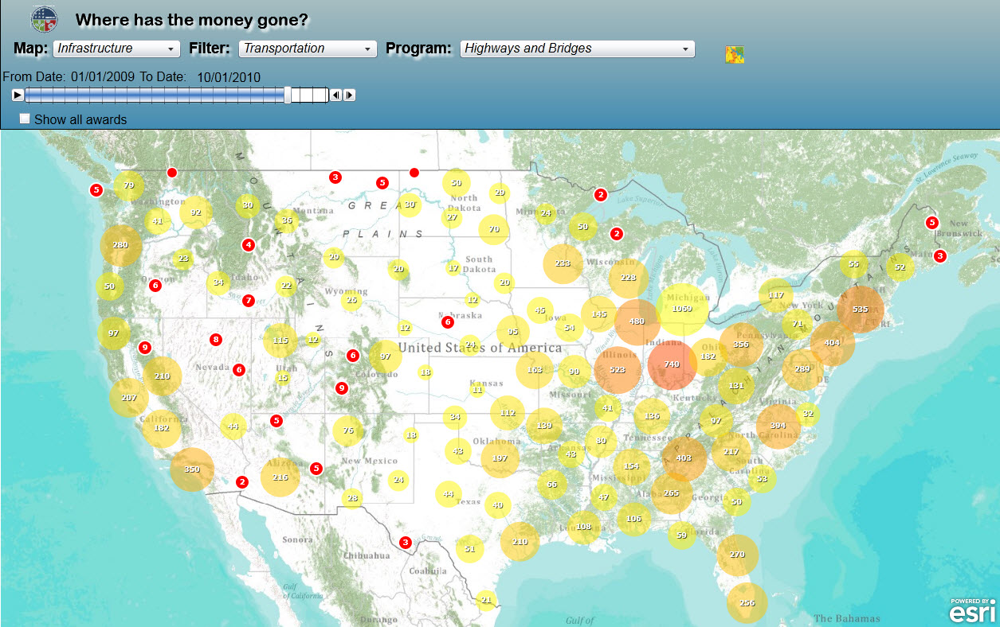

Introduction to JavaScript
James Tedrick & Evan Caldwell
A brief history of web pages

Web pages started out with only text, images, and links
Using web servers to run applications and JavaScript to provide minimal interactivity in a browser, we could develop applications

Application work: Server > Desktop
Modern web applications now use JavaScript in the browser to provide most functionality.
Application work: Server < Desktop
Getting Started
What can you do with the JS API?
- Create Interactive maps
- Use ArcGIS Online Basemaps & Services
- Find Addresses
- Calculate a route
- Run your own tasks
- Load data from ArcGIS Server
dojo Toolkit
http://dojotoolkit.org- Esri JS API is built on top of the Dojo Toolkit
- Dojo is a set of tools to make it easier to build complex applications using JavaScript
- Automates common JavaScript tasks & workflows
- Provides user interface (layout structure, graphs, form items)
- Dojo is organized in modules to make it easy to load
Loading modules
Load modules using therequire method:
require(["esri/Map"],
function(Map){
var map = new Map();
}
);
First is the list of modules you're using,
then a function that uses the modules as parameters
Dijits
User Interface (UI) components- Layout: Containers, Tabs, Accordions
- App control: Menus, Dialogs
- Forms: Validating text box, Dropdowns, Rich Text
- Data Display: Charts, Grids, Gauges
Inside the JS API
- Map - with contorls, infoWindow (pop-up), graphics layer & map layers
- Map Layers
- Map Service Layers - images of maps (entire area or cached tiles)
- Graphics / Feature Layers - vectors & attributes (manipulate in app)
- Tasks - Query, Locator, Geoprocessing, Geometry
Esri Dijits - Map UI
- Geolocation
- Geocoder
- Directions
- Printing
- Identity Manager
- Legend / Scalebar
- Measurement
- Basemap Gallery
- GeoEnrichment
- Histogram
- Swipe
Bring your own framework!
- The JS API also plays well with other frameworks (jQuery, Sencha, …)
- Esri provides a compact build of the API, minimizes the amount of Dojo loaded
- Recommended design philosophy: separate Esri/Dojo code from other framework code to enhance maintainability
Developing Applications
Coding Tools
Ajax
(it's not just for cleaning)
Not all browsers are created equal
(IE 8, I'm looking at you)
▶ Note: U.S. Government has an IE 8 standard ◀
Proxies & CORS
- Normally, web pages can't receive data from another domain (cross domain)
- You see it as stuff not loading with Permission Denied errors
- Ways to get around that:
- Proxy Applications: you run an application on your web server to fetch data
ArcGIS Proxy Documentation - Cross-Origin Resource Sharing (CORS): New standard for configuring the server providing data
http://enable-cors.org
- Proxy Applications: you run an application on your web server to fetch data